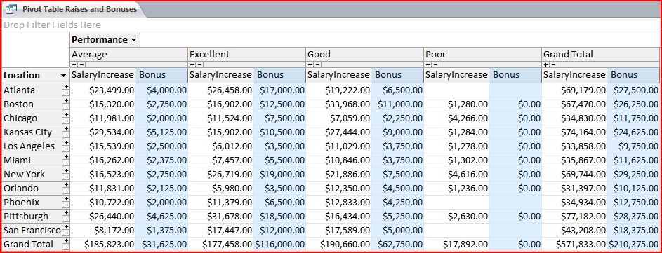

I have experience in Microsoft Access and MySql. I am a visual person. A picture helps me understand and remember a concept or terminology much better than just the text.
A computer database is a program that lets you store, organize, and manipulate data. Below are some of the most important concepts and terminologies in a relational database:
Good database design begins with grouping data into the correct tables. This process is known as normalization.
Source: http://gerardnico.comPRIMARY KEY AND FOREIGN KEY: A foreign key is a field in one table that is also a primary key of another table.

Source: http://www.utteraccess.com
DATA VALIDATION: A set of constraints or rules that help control how data is entered into a field.
- Required Field: Sets the required property of a field to force data entry, such as a last name.
- Lookup Lists: Forces users to pick from the list
- Multiple Value Fields: Accept multiple values in a single field.
- Default Value: Specify a value that is automatically entered in a field.
- Validation rule: Limit the type of data user can enter into a field.
- Validation Text:Provide error message telling users what they did wrong and how to fix it.
- Input mask: Forces user to follow a specific data format.
REFERENTIAL INTEGRITY: When it is enforced, you cannot enter a foreign key value in a related table unless the primary key value exists in the primary table.
QUERY: A query enables you to ask questions about the data stored in a database. To build a query, you need to know the structure of your database, the relationship between the tables. The most common type of query is: Select. Ex: SELECT StudentName FROM Students WHERE LastName ='Nguyen';
ACTION QUERIES: Add, edit, or delete data in a database.
The picture below shows how to create a simple table in MySQL with 4 columns(emp_id, name, age, salary) initially.
Then 3 records were added. Then a 5th column(address) was added; and the column named: 'salary' was changed to: 'emp_sal'
Now the name "Alex" in column 2 row 3 is changed to Jimmy" and the address column is removed from the employee table
The image below shows the eror after the select query is run because the table does not exist any more.
MULTI-TABLE QUERY: It contains two or more tables. It enables you to take advantage of the relationships that have been set in your database.
INNER JOIN, LEFT JOIN, RIGHT JOIN, and FULL OUTER JOIN:

Source: Visual-Representation-of-SQL-Joins explained in detail by C.L. Moffatt.
PIVOT TABLE: It is a data summarization tool that can sort, filter, and total data in a table or query and then display the summarized data in a format specified by a user.
Pivot Chart provides a visual representation of the data in a Pivot table.

Back to top